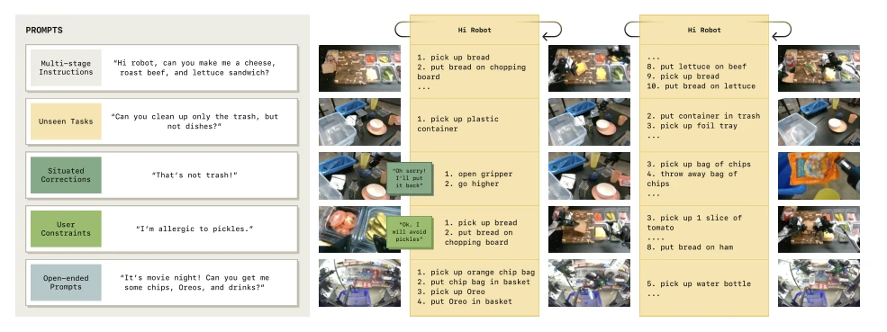
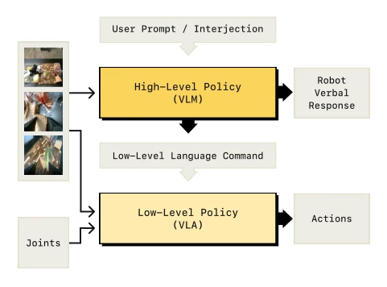
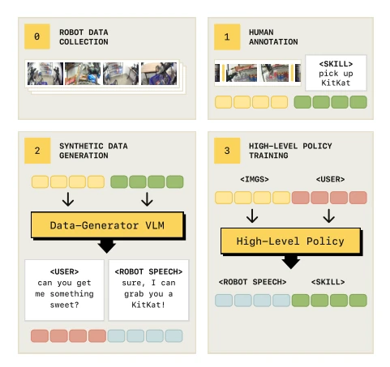
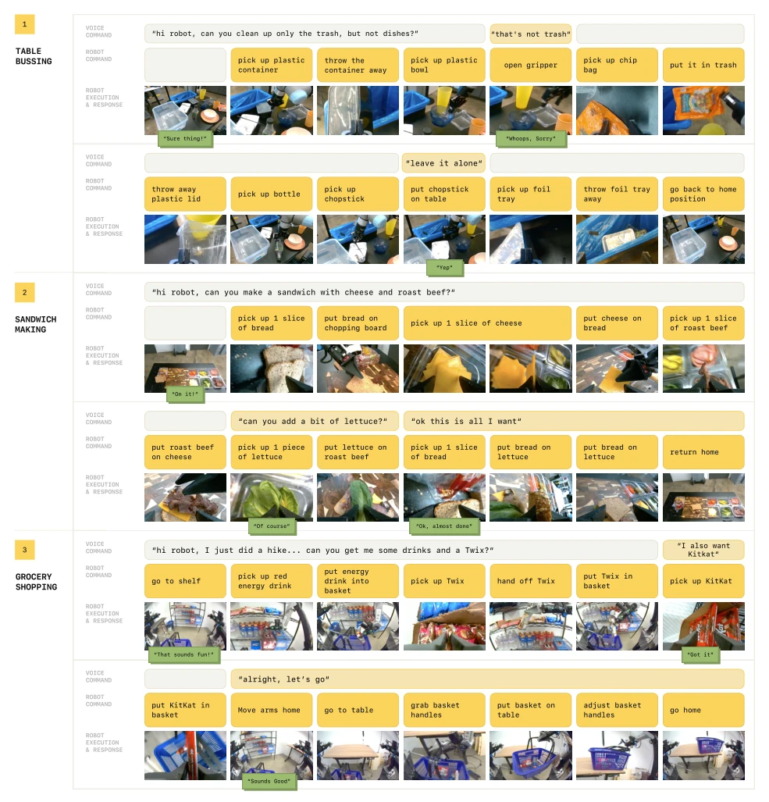
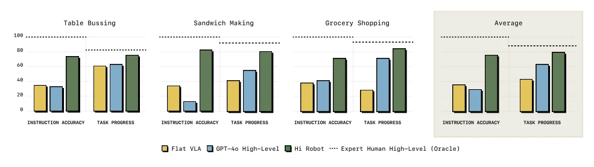
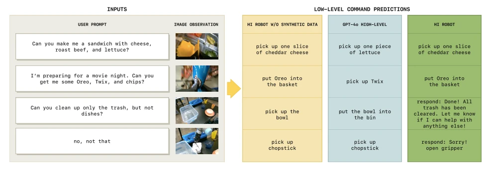
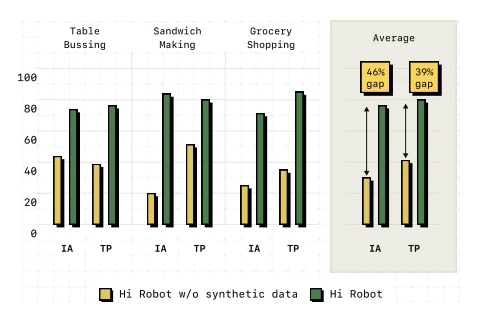
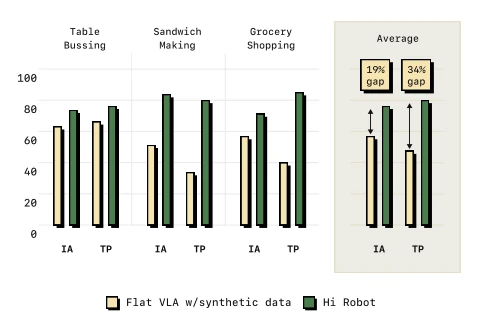

This paper forcibly equips embodied intelligence with a "cerebral cortex". Hi Robot splits the VLM into high and low layers; the high layer is responsible for thinking (System 2), and the low layer is responsible for acting (System 1). This idea is quite correct, after all, it is too much to ask a model that only knows how to "pick up a cup" to understand "don't pick up that plate". They developed a synthetic data generator, using VLM to fabricate user instructions for existing skills; this approach saves manpower and counts as training the high-level policy "from nothing". However, synthetic data is after all not real human intent; what if the model learns to "make up stories" instead of "following commands"? Additionally, although claimed to be open-ended, the bottom skill library is still limited; switching to an unseen object is estimated to cause it to fail. Overall, it is a pragmatic upgrade in the VLA field, more reliable than simply tuning parameters for GPT-4o, but still far from true general-purpose robots, after all, it still relies on humans defining skill segments first.
研究动机Motivation
现有 VLA 模型（如 RT-2, π0）擅长执行原子指令（Brohan et al., 2022; Black et al., 2024），但在开放世界面对复杂长程任务时显得力不从心。比如用户说“做个素食三明治，别放番茄”，现有模型往往无法动态调整或处理中途反馈（如“那个不是垃圾”）。这类似于卡尼曼的 System 1（自动执行）与 System 2（深思熟虑）的区别。现有工作多聚焦于 System 1 行为，缺乏高层推理能力来解析复杂语境和修正指令。例如 SayCan 虽用 LLM 规划，但缺乏视觉 grounding（Brohan et al., 2023b）。因此，需要一种能结合视觉、语言反馈并进行分层决策的架构，以实现真正的人机协作，解决指令与物理执行之间的语义鸿沟。
Existing VLA models (such as RT-2, π0) are proficient at executing atomic instructions (Brohan et al., 2022; Black et al., 2024), but appear powerless when facing complex long-horizon tasks in open worlds. For example, when a user says "make a vegetarian sandwich, no tomatoes", existing models often cannot dynamically adjust or handle mid-course feedback (such as "that is not trash"). This is similar to the distinction between Kahneman's System 1 (automatic execution) and System 2 (deliberate thinking). Existing work mostly focuses on System 1 behavior, lacking high-level reasoning capabilities to parse complex contexts and correct instructions. For example, although SayCan uses LLM for planning, it lacks visual grounding (Brohan et al., 2023b). Therefore, an architecture that combines vision, language feedback, and hierarchical decision-making is needed to achieve true human-machine collaboration and resolve the semantic gap between instructions and physical execution.

Figure 1: Open-ended instruction following. Hi Robot enables robots to follow multi-stage instructions, adapt to real-time corrections and constraints, complete unseen long-horizon tasks, and respond verbally when needed.
Overall adopts a hierarchical architecture, decomposing the policy p(At|ot) into high and low layers of reasoning. The high-level policy (VLM) receives multi-view images and open instructions, outputting low-level language commands (such as "pick up bread"); the low-level policy (VLA) receives the command and state, generating action blocks. High-level reasoning frequency is low, triggered only at time intervals or user intervention, equivalent to "slow thinking". Regarding data, first collect teleoperation demos and segment them into skill segments, then use a VLM to generate synthetic data: given images and skill labels, let the VLM fabricate possible user instructions and robot responses, forming Dsyn. During training, the high layer uses cross-entropy to predict commands, and the low layer uses flow-matching to predict actions. The architecture is based on PaliGemma-3B, and the low layer follows π0's flow matching design. This design allows the high layer to focus on semantic reasoning and the low layer on physical execution, compensating for the scarcity of real interaction data through synthetic data, achieving the mapping from complex instructions to atomic actions.

Figure 2: Overview of hierarchical VLA. The policy consists of a high-level and a low-level policy. The high-level policy pro- cesses open-ended instructions and images from base and wrist- mounted cameras to generate low-level language commands. The low-level policy uses these commands, images, and robot states to produce actions and optionally verbal responses.

Figure 3: Data collection and generation for training the high- level policy. We first collect teleoperated robot demonstrations and segment them into short skills (e.g., pick up KitKat). Using this labeled data, we prompt a vision-language model (VLM) to generate synthetic user instructions (e.g., “Can you get me some- thing sweet?”) and robot responses. The resulting dataset is used to train the high-level policy, which maps image observations and user commands to verbal responses and skill labels.
实验Experiments
在餐桌清理、做三明治、购物三个任务上评估，涵盖单臂、双臂及移动平台。对比基线包括 GPT-4o 作为高层、Flat VLA 以及无合成数据的变体。指标为指令准确率（IA）和任务进度（TP）。结果显示 Hi Robot 在 IA 上比 GPT-4o 高出 40% 以上，更接近人类专家水平。消融实验表明，合成数据对处理开放指令至关重要，分层结构比扁平策略更能适应中途反馈。GPT-4o 常因缺乏物理 grounding 而胡言乱语，Flat VLA 则无法理解复杂约束。这证明了分层推理与合成数据结合的有效性，特别是在处理“别拿那个盘子”这类否定指令时表现优异。
Evaluated on three tasks: table clearing, sandwich making, and shopping, covering single-arm, dual-arm, and mobile platforms. Comparison baselines include GPT-4o as the high layer, Flat VLA, and a variant without synthetic data. Metrics are Instruction Accuracy (IA) and Task Progress (TP). Results show Hi Robot is more than 40% higher than GPT-4o in IA, closer to human expert levels. Ablation studies show that synthetic data is crucial for handling open instructions, and hierarchical structures adapt better to mid-course feedback than flat policies. GPT-4o often talks nonsense due to lack of physical grounding, while Flat VLA cannot understand complex constraints. This proves the effectiveness of combining hierarchical reasoning with synthetic data, especially performing excellently when handling negative instructions like "don't pick up that plate".

Figure 4: Task domains used in our evaluation. Across three domains, we evaluate complex instructions, intermediate feedback, and user interruptions. For example, in Table Bussing, when the user says, “that’s not trash,” the robot correctly puts the bowl back down instead of putting it away. All images are from policy rollouts.

Figure 5: Comparisons to Prior Methods. Hi Robot outperforms GPT-4o and flat VLA on Table Bussing, Sandwich Making, and Grocery Shopping. Hi Robot averages over 40% higher instruction accuracy than GPT-4o, showing stronger alignment with user prompts and real-time observations, and approaches expert human guidance by leveraging its high-level policy.

Figure 6: Qualitative Command Comparisons. GPT-4o often (a) misidentifies objects, (b) skips subtasks, or (c) ignores user intent. Hi Robot consistently produces commands aligned with the robot’s ongoing actions and user requests. Without synthetic data, the high- level policy aligns well with image observations but ignores user constraints.

Figure 7: Ablation on synthetic data. Synthetic data is essential for handling open-ended instructions, as the model trained with- out it struggle with user-driven deviations, failing to integrate clar- ifications and constraints, whereas Hi Robot adapts seamlessly by leveraging diverse, compositional language prompts. (IA = In- struction Accuracy, TP = Task Progress)

Figure 8: Hierarchical policy vs. flat policy. The hierarchical approach outperforms the flat variant trained on the same data, as it effectively integrates user feedback and partial instructions, whereas the flat model struggles with mid-task clarifications and nuanced task variations. (IA = Instruction Accuracy, TP = Task Progress)